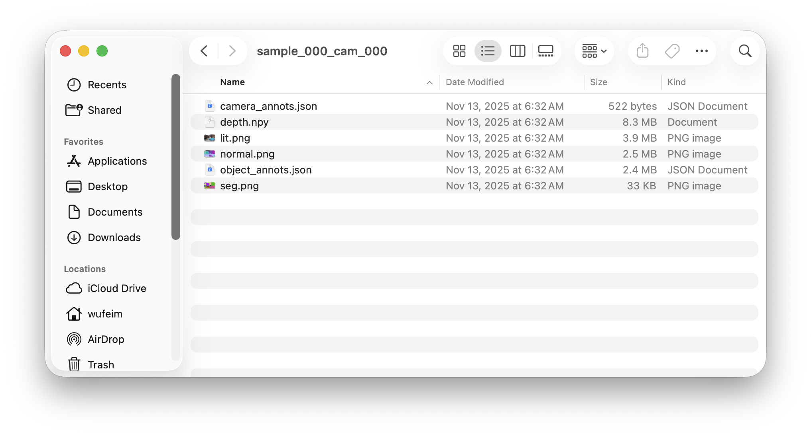
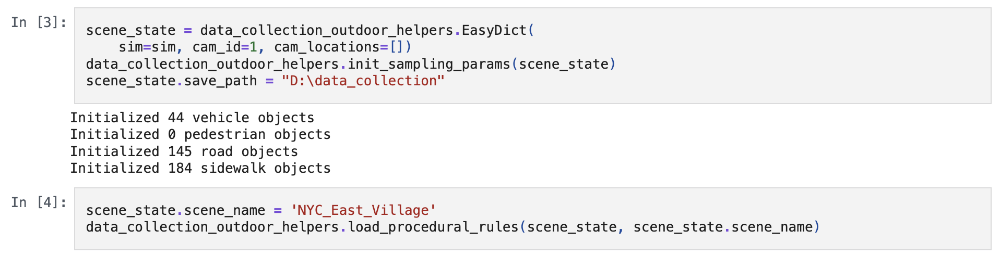

Using LychSim Datasets#
This documentation applies to LychSim datasets as of November 2025.
Overview#
LychSim data collection typically proceeds in three stages. First, we randomly sample a set of objects along with their initial placements. Next, we enable Unreal Engine (UE) physics simulation and wait until all objects reach a stable configuration. Finally, we select a camera viewpoint (or trajectory) and collect the data.
Data are saved in directories named using the format sample_000_cam_000, where sample ID corresponds to a scene with randomly placed objects, and camera ID identifies a specific camera location or trajectory.
As illustrated below, each directory contains six files. In addition to RGB (lit), segmentation, depth, and normal renderings, object_annots.json stores annotations describing the environment, objects, and sampling parameters, while camera_annots.json records important information about the camera parameters.

File layouts.#
Camera Annotations#
We can load camera extrinsic and intrinsic parameters from camera_annots.json.
>>> import json
>>> annots = json.load(open("camera_annots.json"))
>>> annots.keys()
dict_keys(['status', 'outputs'])
>>> annots["status"]
'ok'
>>> annots["outputs"].keys()
dict_keys(['location', 'rotation', 'fov', 'c2w', 'width', 'height', 'fxfycxcy'])
>>> annots["outputs"]["location"]
[-1183.3726806640625, 6058.03076171875, 374.64801025390625]
>>> annots["outputs"]["rotation"]
[-5.717591762542727, 27.658029556274425, 0]
>>> annots["outputs"]["fxfycxcy"]
[960.0000000000001, 960.0000000000002, 960.0, 540.0]
Object Annotations#
We can load scene and object annotations from object_annots.json.
>>> import json
>>> annots = json.load(open('object_annots.json'))
>>> annots.keys()
dict_keys(['status', 'outputs', 'sampling', 'scene_state', 'lighting', 'fog'])
>>> annots["status"]
'ok'
We save the object sampling parameters used for placing the objects. (See this code.) Here annots["sampling"] is a list of dictionaries, each containing location, rotation, mesh path, etc. The locations are the initial object positions before the physics simulation.
>>> annots["sampling"][0]
{'loc': [-874.3808910999799, 6505.062123544488, -20.556038], 'rot': [0, -9.56143919756771, 0], 'obj_path': '/Game/Vehicles/VOL12_EmergencyResponse/Meshes/SM_Pd_Van_01a.SM_Pd_Van_01a', 'extent': [323.2451171875001, 131.63250732421886, 144.87890625], 'object_id': 'SM_Pd_Van_01a_c30f9f00'}
Scene state is also saved in annots["scene_state"], corresponding to the scene state information used when collecting data. (See this notebook.)

Scene state usage.#
Key lighting parameters, such as rotation and temperature of the directional light is saved in annots["lighting"].
>>> annots["lighting"]
{'rotation': [-68.39920043945308, 128.7829742494278, -126.29943847656249], 'temperature': 6344}
If fog is simulated, we also record the fog density in annots["fog"].
>>> annots["fog"]
{'density': 0.002}
We save all object annotations in annots["outputs"]. The field sampled_by_us implies if an object is sampled by us, e.g., objects already in the scene file or ones we added to the scene. For objects not sampled by us, we store standard annotations as follows
>>> annots['outputs'][0].keys()
dict_keys(['object_id', 'status', 'guid', 'aabb', 'obb', 'bounds', 'bounds_tight', 'location', 'rotation', 'scale', 'color', 'asset_path', 'sampled_by_us'])
For objects sampled by us, we store extra sampling parameters, same as ones stored in annots["sampling"]. (See this code.)
Example Usage#
We first load camera parameters for 3D to 2D projection.
cam = json.load(open(os.path.join(data_path, seq, "camera_annots.json")))["outputs"]
We also load object annotations and scene_state that records dimensions of the objects.
annots = json.load(open(os.path.join(data_path, seq, "object_annots.json")))["outputs"]
scene_state = json.load(open(os.path.join(data_path, seq, "object_annots.json")))["scene_state"]
Now we visualize the target objects.
def convert(obj, scene_state):
asset_path = obj["sampling_info"]["obj_path"]
return dict(
obj_id=obj["object_id"],
extents=scene_state["mesh_extents"][asset_path],
location=obj["location"],
rotation=obj["rotation"],
yaw_bias=sampling_params[asset_path]["rotation yaw"],
loc_z_bias=sampling_params[asset_path]["location z"],
mesh_2d_offset=[sampling_params[asset_path]["mesh_2d_offset_x"], sampling_params[asset_path]["mesh_2d_offset_y"]]
)
def draw(img, cam, obj):
yaw_bias = - obj["yaw_bias"] / 180 * math.pi
ex, ey, ez = obj["extents"]
loc = obj["location"]
rot = obj["rotation"] # ry, rz, rx = pitch, yaw, roll
ox, oy = obj["mesh_2d_offset"]
corners_local_chassis = np.array([
[ox-ex, oy-ey], [ox+ex, oy-ey],
[ox+ex, oy+ey], [ox-ex, oy+ey]])
R = np.array([
[math.cos(yaw_bias), -math.sin(yaw_bias)],
[math.sin(yaw_bias), math.cos(yaw_bias)],
])
corners_local_chassis = np.dot(R, corners_local_chassis.T).T
corners_local = np.concatenate(
[corners_local_chassis, corners_local_chassis], axis=0)
corners_local = np.concatenate(
[corners_local, np.array([[0.0, 0.0, 0.0, 0.0, 2*ez, 2*ez, 2*ez, 2*ez]]).T], axis=1)
pitch = -rot[0] / 180 * math.pi
yaw = rot[1] / 180 * math.pi
roll = -rot[2] / 180 * math.pi
loc[2] += obj["loc_z_bias"]
corners3d = get_corners_3d(loc, corners_local, yaw, pitch, roll)
corners2d, _ = project(corners3d, np.array(cam["c2w"]).T, cam["fxfycxcy"])
Ls = [
np.linalg.norm(corners3d[0:1] - corners3d[1:2]),
np.linalg.norm(corners3d[1:2] - corners3d[2:3]),
np.linalg.norm(corners3d[0:1] - corners3d[4:5])]
L = min(Ls)
center3d = np.mean(corners3d, axis=0, keepdims=True)
other_points_3d = [
center3d + 0.5 * (corners3d[0:1] - corners3d[1:2]),
center3d - 0.5 * (corners3d[0:1] - corners3d[1:2]),
center3d + 0.5 * (corners3d[1:2] - corners3d[2:3]),
center3d - 0.5 * (corners3d[1:2] - corners3d[2:3]),
center3d + 0.5 * (corners3d[0:1] - corners3d[4:5]),
center3d - 0.5 * (corners3d[0:1] - corners3d[4:5]),
enter3d,
center3d + 0.5 * (corners3d[0:1] - corners3d[1:2]) / np.linalg.norm(corners3d[0:1] - corners3d[1:2]) * L,
center3d - 0.5 * (corners3d[1:2] - corners3d[2:3]) / np.linalg.norm(corners3d[1:2] - corners3d[2:3]) * L,
center3d - 0.5 * (corners3d[0:1] - corners3d[4:5]) / np.linalg.norm(corners3d[0:1] - corners3d[4:5]) * L,
]
other_points_3d = np.concatenate(other_points_3d, axis=0)
other_points_2d, _ = project(other_points_3d, np.array(cam["c2w"]).T, cam["fxfycxcy"])
other_points_2d = other_points_2d[6:]
cam_loc = np.array(cam["c2w"]).T[:3, 3:].T
dist = np.linalg.norm(other_points_3d[:6] - cam_loc, axis=1)
dist = sorted([(dist[i], i) for i in range(6)])
face_indices = [x[1] for x in dist[3:]]
faces = []
if 0 in face_indices:
faces.append([1, 2, 6, 5])
if 1 in face_indices:
faces.append([0, 3, 7, 4])
if 2 in face_indices:
faces.append([2, 3, 7, 6])
if 3 in face_indices:
faces.append([0, 1, 5, 4])
if 4 in face_indices:
faces.append([4, 5, 6, 7])
if 5 in face_indices:
faces.append([0, 1, 2, 3])
edges = []
for f in faces:
for i in range(4):
edges.append((f[i], f[(i+1)%4]))
if obj['cate'] not in color_mapping:
raise ValueError(obj['cate'])
else:
color = color_mapping[obj['cate']]
img = visualize_bbox(img.copy(), corners2d, edges, color=color, a=192, thickness=5)
for f in faces:
pts = np.concatenate([
corners2d[f[i]:f[i]+1]
for i in range(4)
])
draw_transparent_poly(img, pts, alpha=0.5, color=color)
for i, j, c in [(0, 1, (255, 0, 0, 192)), (0, 2, (0, 255, 0, 192)), (0, 3, (0, 0, 255, 192))]:
pt1 = (int(other_points_2d[i, 0]), int(other_points_2d[i, 1]))
pt2 = (int(other_points_2d[j, 0]), int(other_points_2d[j, 1]))
cv2.line(img, pt1, pt2, c, 5)
return img
annots_vis = []
for obj in annots:
area = np.sum(np.all(seg == obj["color"], axis=-1))
if area >= vis_threshold:
annots_vis.append(obj)
for i, obj in enumerate(annots_vis):
obj = convert(obj, scene_state)
vis_img = draw(obj, cam, scene_state, np.array(img))
Image.fromarray(vis_img).save(f"debug_pose_{i:02d}.png")